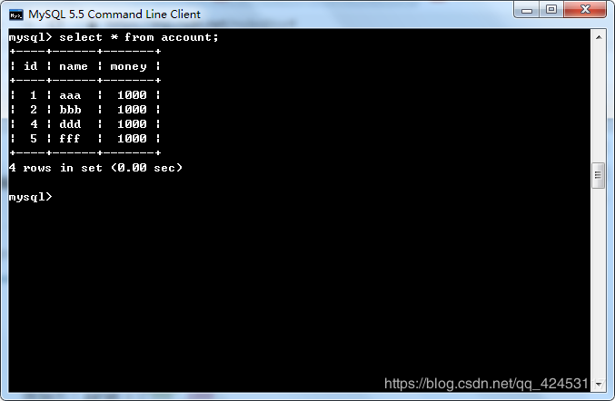
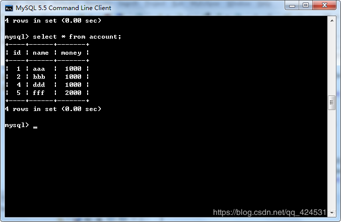
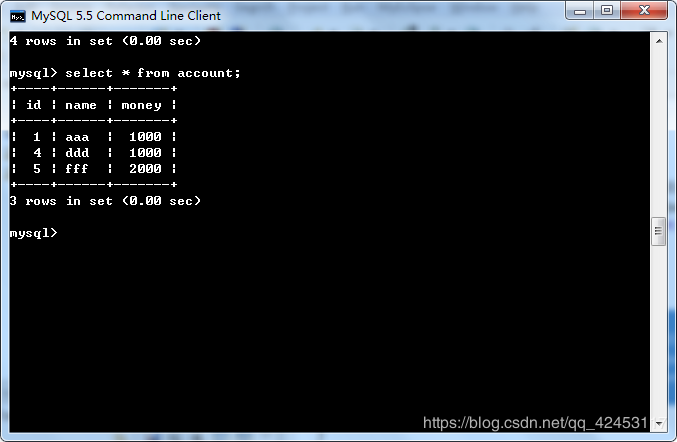
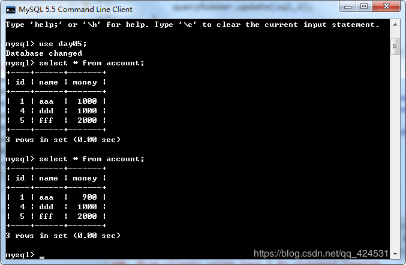

原文连接:https://www.cnblogs.com/blizzawang/p/11411790.html
昨天做了这么多的铺垫，当然就是为了引出今天的DBUtils框架了，它的实现原理跟我们编写的简易框架是类似的。
话不多说，进入正题。
commons-dbutils 是 Apache 组织提供的一个开源 JDBC工具类库，它是对JDBC的简单封装，学习成本极低，并且使用dbutils能极大简化jdbc编码的工作量，同时也不会影响程序的性能。因此dbutils成为很多不喜欢hibernate的公司的首选。
jar包下载地址：链接：https://pan.baidu.com/s/1BKtq_VoBw52qyIJr6c_CZg
提取码：skrf
复制这段内容后打开百度网盘手机App，操作更方便哦
API介绍：
- org.apache.commons.dbutils.QueryRunner --- 核心操作类
- org.apache.commons.dbutils.ResultSetHandler
- org.apache.commons.dbutils.DbUtils --- 工具类
QueryRunner 类简单化了SQL查询，它与ResultSetHandler组合在一起使用可以完成大部分的数据库操作，能够大大减少编码量。
QueryRunner类提供了两个构造方法：
默认的构造方法
需要一个 javax.sql.DataSource 来作参数的构造方法。
QueryRunner类有四个重载的构造方法，如果使用QueryRunner(DataSource ds)构造QueryRunner对象，数据库事务将交给DBUtils框架进行管理，默认情况下每一个sql单独一个事务。此时应该使用不带Connection参数的方法。
如果使用QueryRunner()构造QueryRunner对象，就需要自己来管理事务，因为框架没有连接池，无法获得数据库的连接，此时应该使用带Connection参数的方法。
Dbutils工具类能够加载驱动、关闭资源、控制事务，所以之前的一些繁琐工作都可以借助该工具类实现。
编写案例演示一下。
新建一个web项目，不要忘了导入jar包。
新建测试类QueryRunnerTest
先在类中定义一个成员变量，方便后续测试
private static ComboPooledDataSource dataSource = new ComboPooledDataSource();编写插入的测试代码
@Test
public void testInsert() throws SQLException{
//1、创建QueryRunner对象
QueryRunner queryRunner = new QueryRunner(dataSource);
//2、准备方法参数
String sql ="insert into account values(null,?,?)";
Object[] param = {"fff",1000};
//3、调用方法
queryRunner.update(sql, param);
}使用该构造方法构造的QueryRunner对象是不需要手动释放资源的，因为连接交由DBUtils工具包管理了，它会帮助我们释放资源。
然后运行测试代码

插入成功。
接下来测试一下更新sql，编写测试代码
@Test
public void testUpdate() throws SQLException{
QueryRunner queryRunner = new QueryRunner(dataSource);
String sql = "update account set money = ? where name = ?";
Object[] param = {2000,"fff"};
queryRunner.update(sql,param);
}运行测试代码

修改成功。
接下来测试一下删除sql，编写测试代码
@Test
public void testDelete() throws SQLException{
QueryRunner queryRunner = new QueryRunner(dataSource);
String sql = "delete from account where id = ?";
queryRunner.update(sql,2);
}运行测试代码

删除成功。
现在我们来模拟一个转账的情景。
@Test
public void testTransfer() throws SQLException{
double money = 100;
String outAccount = "aaa";
String inAccount = "bbb";
String sql1 = "update account set money = money - ? where name = ?";
String sql2 = "update account set money = money + ? where name = ?";
QueryRunner queryRunner = new QueryRunner(dataSource);
queryRunner.update(sql1,money,outAccount);
//产生一个错误
int d = 1 / 0;
queryRunner.update(sql2,money,inAccount);
}运行测试代码

程序报错，aaa账户少了100，而bbb账户金额并没有多，这是因为你把连接交给了DBUtils管理，默认一条sql就是一个事务，所以，我们应该自己来管理事务，才能避免这种情况发生。
修改转账代码
@Test
public void testTransfer() throws SQLException{
double money = 100;
String outAccount = "aaa";
String inAccount = "bbb";
String sql1 = "update account set money = money - ? where name = ?";
String sql2 = "update account set money = money + ? where name = ?";
//手动事务管理
QueryRunner queryRunner = new QueryRunner();
Connection conn = JDBCUtils.getConnection();
conn.setAutoCommit(false);
try {
queryRunner.update(conn,sql1,money,outAccount);
//产生一个错误
int d = 1 / 0;
queryRunner.update(conn,sql2,money,inAccount);
DbUtils.commitAndCloseQuietly(conn);
} catch (Exception e) {
DbUtils.rollbackAndCloseQuietly(conn);
e.printStackTrace();
}
}此时运行代码
4.png)
表数据并没有改变，说明更新操作被回滚了。